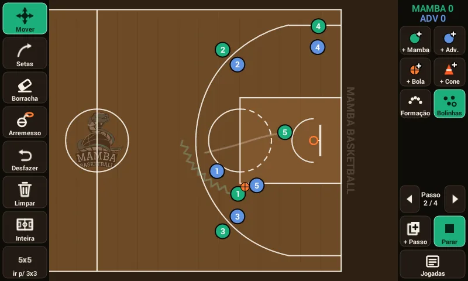
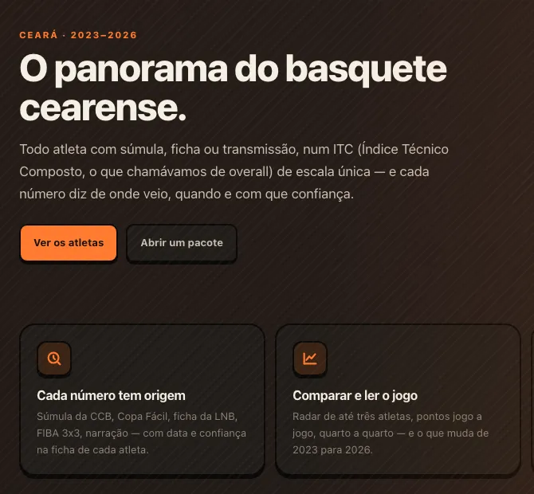

Neste artigo
Eu tinha um Multilaser M7s encostado. Tablet de 2014, 512 MB de RAM, dois núcleos a 1 GHz, Android 4.4. Travava pra fazer qualquer coisa e o destino natural dele era o lixo. Aí bateu a pergunta de quem programa: e se o problema fosse o software e não o aparelho?
Pouco mais de uma semana depois ele tinha um sistema com o meu nome, uma prancheta tática de basquete e um piano. Nenhum desses projetos tem usuário além de mim, e foram os que mais me ensinaram nos últimos meses.
Um sistema pra um tablet que ninguém mais suporta
O M7s não tem nenhuma ROM alternativa no mundo, nem tópico no XDA. Se eu quisesse um sistema que travasse menos, ia ter que escrever o primeiro, e foi assim que nasceu o Taleszin OS.
O começo foi engenharia reversa do firmware oficial: mapear as partições do chip Rockchip RK3026, fazer backup completo em modo loader e gravar pelo Mac com rkflashtool, conferindo sha256 bloco a bloco.
O que resolveu o travamento foram serviços em shell que sobem no boot: zRAM de 128 MB, KSM pra deduplicar memória, governador de CPU ajustado e uma sentinela que mata o processo certo antes do sistema morrer sem memória. Fiz também uma caixa-preta que, no boot seguinte, explica por que a sessão anterior acabou. Em vez de "travou de novo", eu passei a ter um motivo escrito.

Uns achados eu não ia encontrar em lugar nenhum. O sensor de bateria do kernel congela entre degraus de porcentagem, então o tablet desligava achando que tinha carga. A saída foi ler a tensão real direto do ADC e montar um vigia que reduz CPU e brilho antes do apagão. O botão liga/desliga não tinha reset, então passei a ler o evento cru do evdev: oito segundos pressionado e o sistema faz sync, remonta como só-leitura e reinicia.
# evdev cru: struct input_event de 16 bytes
set -- $(dd bs=16 count=1 <&3 | od -b)
# type 001 = EV_KEY · code 164 = KEY_POWER
[ "${10}${11}" = 001000 ] || continue
echo s > /proc/sysrq-trigger; echo u > /proc/sysrq-trigger; echo b > /proc/sysrq-triggerOs apps também são meus, em Java puro compilado com aapt2 e d8, sem Gradle, quase todos com menos de 120 KB. O código tá no meu GitHub, com build reproduzível a partir do zip oficial e sem versionar firmware de ninguém.
A prancheta e o scout do domingo
O primeiro app que coloquei no tablet nem era do sistema. Era uma prancheta. Eu jogo basquete e handebol a sério, prancheta de papel apaga mal e os apps que existem não rodam num Android 4.4. A minha tem quadra FIBA meia e inteira, quadra de 3x3, fichas arrastáveis, setas de corte, passe, drible e bloqueio, e jogadas em passos que animam de um pro outro. Desenhada direto no Canvas, salva offline, umas duas mil linhas de Java.

A prancheta mostra a jogada. O scout diz qual jogada desenhar. No time em que jogo a Copa Cearense, isso virou um pipeline em Python: súmulas da federação, estatística de elenco e um índice técnico pra comparar atletas numa escala só. Parte disso virou o Basquete Cearense, um panorama público em React.

A liga mais forte do estado não publica súmula, mas transmite tudo no YouTube, então os lances saíam da transcrição da narração. Foi aí o erro que mais me ensinou: uma versão de dossiê tinha clipes cortados automaticamente no instante em que o placar da transmissão mudava. Só que o overlay atrasa de 4 a 11 segundos em relação ao lance, e a amostragem era de 8 em 8 segundos, mais lenta que um contra-ataque. Um "contra-ataque" do documento era lance livre, outro clipe não mostrava nada. Joguei a versão fora, e a regra que ficou é que nenhum clipe entra sem alguém ter olhado o que ele mostra. Como o cliente era eu, eu ia descobrir isso no vestiário, explicando uma jogada que não existiu.
Um piano que cabe em 42 KB
O piano nasceu porque eu queria aprender um instrumento e o tablet já estava ali. Mesma dieta: Java puro, uns 42 KB, cerca de 5 MB de RAM. Eu queria usar amostras de piano gravado, mas o SoundPool do Android 4.4 recusa PCM acima de 1 MB, então o som é sintetizado em FM, com uma portadora na proporção 1:1 e um "sininho" em 14:1.
Tocar sozinho cansa rápido, então veio um modo estilo Guitar Hero: as notas caem sobre a tecla certa, tem combo, recorde e velocidade de 30% a 150%. Erro deixa a tecla vermelha e não sai som, porque errado e alto desanima. Escrevi um conversor de MIDI pro formato do app e hoje são 194 músicas em 9 categorias. Quando ficou bom, um TARGET=34 no script de build gerou o APK pra Android 14 sem reescrever nada.
O que construir pra mim ensina
No trabalho, alguém decide o que é pronto. Quando o cliente sou eu, não tem pra quem empurrar: se o tablet trava, sou eu que fico com raiva, se o scout erra, sou eu que passo vergonha. Isso me deixou mais exigente com o que considero terminado, inclusive no resto. E me deu liberdade de descer de nível: nenhum produto de trabalho ia justificar ler evdev cru.
A IA mudou a conta desses projetos. Os commits têm o Claude como coautor, e as datas contam a história: o primeiro e o último commit da ROM ficam a dois dias de distância, a prancheta saiu em dois dias, o piano da versão 1.0 à 1.4 também. Antes, projeto desse tamanho, sozinho e à noite, provavelmente morreria na metade. A IA não decidiu a sentinela de memória nem percebeu que os clipes mentiam. Isso fui eu, olhando o aparelho e o vídeo. O que ela tirou do caminho foi o trabalho braçal entre a ideia e o primeiro teste no hardware. O tablet que ia pro lixo ainda tá aqui.

Full stack de Fortaleza. Ciência da Computação na UECE, cofundador e CTO do Leap Notes, tech lead do Portal da História do Ceará.